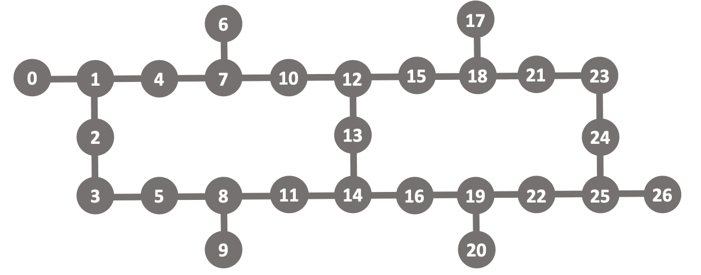
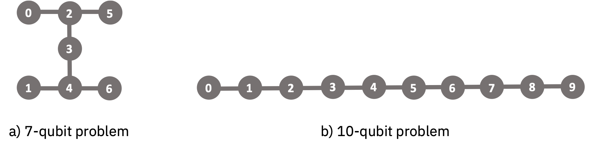

Nota
Esta página fue generada a partir de docs/tutorials/qka.ipynb.
Alineación del Kernel Cuántico con Qiskit Runtime¶
Clasificación con Máquinas de Vectores de SoporteLos problemas de clasificación están muy extendidos en las aplicaciones de machine learning. Los ejemplos incluyen riesgo de tarjeta de crédito, reconocimiento de escritura a mano y diagnóstico médico. Un enfoque para abordar los problemas de clasificación es la máquina de vectores de soporte (support vector machine, SVM) [1,2]. Este algoritmo de aprendizaje supervisado utiliza muestras de datos etiquetados para entrenar un modelo que puede predecir a qué clase pertenece una muestra de prueba. Lo hace encontrando un hiperplano de separación que maximiza el margen entre las clases de datos. A menudo, los datos no se pueden separar linealmente en el espacio original. En estos casos, el truco del kernel se usa para codificar implícitamente una transformación de los datos en un espacio de características de mayor dimensión, a través del producto interno entre pares de puntos de datos, donde los datos pueden volverse separables.
Kernels CuánticosLas computadoras cuánticas se pueden usar para codificar datos clásicos en un espacio de funciones mejoradas cuánticamente. En 2019, IBM introdujo un algoritmo llamado estimador de kernel cuántico (quantum kernel estimator, QKE) para calcular kernels cuánticos [3]. Este algoritmo utiliza circuitos cuánticos con datos proporcionados de forma clásica y ofrece una forma eficiente de evaluar productos internos entre datos en un espacio de características cuánticas. Para dos muestras de datos \(\theta\) y \(\theta'\), la matriz del kernel está dada como
donde \(U(\theta)\) prepara el estado de la característica cuántica. Los kernels cuánticos utilizados en un framework de clasificación heredan el programa de optimización convexa de SVM y evitan las limitaciones comunes de los clasificadores cuánticos variacionales. Una observación clave de este artículo fue que una condición necesaria para una ventaja computacional requiere circuitos cuánticos para el kernel que son difíciles de simular de forma clásica. Más recientemente, IBM demostró que los kernels cuánticos pueden ofrecer aceleraciones superpolinómicas sobre cualquier aprendiz clásico en un problema de aprendizaje basado en la dificultad del problema del logaritmo discreto [4]. Esto significa que los kernels cuánticos algún día pueden ofrecer una ventaja cuántica en los problemas adecuados.
Kernels Cuánticos que Explotan la Estructura de los DatosUn enfoque importante en la búsqueda de una ventaja cuántica práctica en el machine learning es identificar los kernels cuánticos para problemas de aprendizaje que tienen una estructura subyacente en los datos. Hemos dado un paso en esta dirección en nuestro artículo reciente [5], donde presentamos una amplia clase de kernels cuánticos que explotan la estructura de grupo en los datos. Los ejemplos de problemas de aprendizaje para datos con estructura de grupo podrían incluir el aprendizaje de permutaciones o la clasificación de traducciones. Llamamos a esta nueva clase de núcleos kernels cuánticos covariantes ya que están relacionados con mediciones cuánticas covariantes. El mapa de características cuánticas está definido por una representación unitaria \(D(\theta)\) de un grupo \(G\) para algún elemento \(\theta \in G\), y un estado de referencia fiducial \(\lvert\psi\rangle = V\lvert0^n\rangle\) preparado por un circuito unitario \(V\). La matriz del kernel está dada como
En general, la elección del estado fiducial no se conoce a priori y puede afectar significativamente el rendimiento del clasificador. Aquí, usamos un método llamado alineación del kernel cuántico (quantum kernel alignment, QKA) para encontrar un buen estado fiducial para un grupo determinado.
Alineación de Kernels Cuánticos en un Conjunto de DatosEn la práctica, las SVMs requieren una elección de la función del kernel. A veces, las simetrías en los datos pueden informar esta selección, otras veces se elige de manera ad hoc. La alineación del kernel es un enfoque para aprender un kernel en un conjunto de datos determinado al adaptarlo iterativamente para que tenga una gran similitud con un kernel objetivo informado a partir de la distribución de datos subyacente [6]. Como resultado, la SVM con un kernel alineado probablemente generalizará mejor los datos nuevos que con un kernel no alineado. Usando este concepto, presentamos en [5] un algoritmo para la alineación del kernel cuántico, que proporciona una forma de aprender un kernel cuántico de una familia de kernels. Específicamente, el algoritmo optimiza los parámetros en un circuito cuántico para maximizar la alineación de un kernel mientras converge al margen máximo de la SVM. En el contexto de los kernels cuánticos covariantes, extendemos la ecuación \((1)\) a
y usamos QKA para aprender un buen estado fiducial parametrizado por \(\lambda\) para un grupo determinado.
Kernels Cuánticos Covariantes en un Problema de Aprendizaje EspecíficoProbemos QKA en un problema de aprendizaje. A continuación, consideraremos un problema de clasificación binaria que llamamos etiquetado de clases laterales con error [5]. En este problema, usaremos un grupo y un subgrupo para formar dos clases laterales, que representarán nuestras clases de datos. Tomamos el grupo \(G = SU(2)^{\otimes n}\) para \(n\) qubits, que es el grupo unitario especial de \(2\times2\) matrices y tiene una amplia aplicabilidad en la naturaleza, por ejemplo, el Modelo Estándar de física de partículas y en muchos sistemas de materia condensada. Tomamos el subgrupo estabilizador de grafos \(S_{\mathrm{graph}} \in G\) con \(S_{\mathrm{graph}} = \langle \{ X_i \otimes_{k:(k,i) \in \mathcal{E}} Z_k \}_{i \in \mathcal{V}} \rangle\) para un grafo \((\mathcal{E},\mathcal{V})\) con aristas \(\mathcal{E}\) y vértices \(\mathcal{V}\). Ten en cuenta que los estabilizadores fijan un estado estabilizador tal que \(D_s \lvert \psi\rangle = \lvert \psi\rangle\). Esta observación será útil un poco más adelante.
Para generar el conjunto de datos, escribimos las rotaciones del grupo como \(D(\theta_1, \theta_2, 0)=\exp(i \theta_1 X) \exp(i \theta_2 Z) \in SU(2)\), de modo que cada qubit esté parametrizado por los dos primeros ángulos de Euler (el tercero lo ponemos en cero). Luego, dibujamos aleatoriamente dos conjuntos de ángulos \(\mathbf{\theta}_\pm \in [-\pi/4, \pi/4]^{2n}\) para el problema de \(n\) qubits A partir de estos dos conjuntos, construimos un problema de clasificación binaria formando dos clases laterales izquierdas (que representan las dos clases) con esos ángulos, \(C_\pm = D(\mathbf{\theta}_\pm) S_{\mathrm{graph}}\) donde \(D(\mathbf{\theta}_\pm) = \otimes_{k=1}^n D(\theta_\pm^{2k-1}, \theta_\pm^{2k}, 0)\). Ten en cuenta que los elementos de las clases laterales se pueden escribir nuevamente en términos de los ángulos de Euler. Construimos conjuntos de entrenamiento y prueba dibujando elementos al azar de \(C_\pm\) de modo que el conjunto de datos tenga muestras \(i=1,...,m\) que contengan los dos primeros ángulos de Euler para cada qubit \(\mathbf{\theta}_{y_i} = (\theta_{y_i}^{1}, \theta_{y_i}^{2}, \theta_{y_i}^{3}, \theta_{y_i}^{4}, ..., \theta_{y_i}^{2n-1}, \theta_{y_i}^{2n})\) y etiquetas \(y_i \in \{-1,1\}\) que indican a qué clase lateral pertenece una muestra.
A continuación, seleccionamos un estado fiducial. Un candidato natural es el estado estabilizador que encontramos arriba. ¿Por qué? Debido a que este es un estado invariable de subgrupo, \(D_s\lvert\psi\rangle = \lvert\psi\rangle\), lo que hace que los datos de una clase lateral determinada se mapeen a un estado único: \(D(\mathbf{\theta}_\pm)D_s \lvert\psi\rangle = D(\mathbf{\theta}_\pm) \lvert\psi\rangle\). Esto significa que el clasificador solo necesita distinguir los dos estados \(D(\mathbf{\theta}_\pm) \lvert\psi\rangle \langle \psi\rvert D^\dagger(\mathbf{\theta}_\pm)\) para cada elemento de la clase lateral. En este tutorial, agregaremos un pequeño error Gaussiano con varianza \(0.01\) a los ángulos de Euler del conjunto de datos. Este ruido perturbará estos dos estados, pero si la varianza es lo suficientemente pequeña, esperamos que los estados se clasifiquen correctamente. Consideremos una versión parametrizada del estado estabilizador, asociado con el grafo de acoplamiento \((\mathcal{E},\mathcal{V})\) dado por la conectividad del dispositivo, como nuestro estado fiducial y luego usemos la alineación del kernel para encontrar sus parámetros óptimos. Específicamente, reemplazaremos las capas iniciales de Hadamards en el estado del grafo con rotaciones \(y\) por un ángulo \(\lambda\),
donde \(CZ=\mathrm{diag}(1,1,1,-1)\). Luego, dadas dos muestras de nuestro conjunto de datos, \(\mathbf{\theta}\) y \(\mathbf{\theta}'\), la matriz del kernel se evalúa como en la ecuación \((2)\). Si inicializamos el kernel con \(\lambda \approx 0\), esperamos que el algoritmo de alineación del kernel cuántico converja hacia \(\lambda = \pi/2\) óptima y el clasificador produzca una precisión de prueba del 100%.
Definamos dos instancias de problemas específicos para probar estas ideas. Usaremos el dispositivo cuántico ibmq_montreal, con el mapa de acoplamiento que se muestra a continuación:

Elegiremos dos subgrafos diferentes, uno para 7 qubits y otro para 10, para definir nuestras instancias de problemas. Usando estos subgrafos, generaremos los conjuntos de datos correspondientes como se describió arriba y luego alinearemos el kernel cuántico con QKA para aprender un buen estado fiducial.

Algoritmos de Aceleración con Qiskit RuntimeQKA es un algoritmo iterativo cuántico-clásico, en el que se utiliza hardware cuántico para ejecutar circuitos cuánticos parametrizados para evaluar las matrices del kernel cuántico con QKE, mientras que un optimizador clásico ajusta los parámetros de esos circuitos para maximizar la alineación. Los algoritmos iterativos de este tipo pueden ser lentos debido a la latencia entre los cálculos cuánticos y clásicos. Qiskit Runtime es una nueva arquitectura que puede acelerar los algoritmos iterativos como QKA al ubicar los cálculos clásicos junto con las ejecuciones de hardware cuántico. En este tutorial, usaremos QKA con Qiskit Runtime para aprender un buen kernel cuántico para el problema de etiquetado de clases laterales con error definido anteriormente.
References [1] B. E. Boser, I. M. Guyon, and V. N. Vapnik, Proceedings of the Fifth Annual Workshop on Computational Learning Theory, COLT ’92 (Association for Computing Machinery, New York, NY, USA, 1992) pp. 144-152 enlace [2] V. Vapnik, The Nature of Statistical Learning Theory, Information Science and Statistics (Springer New York, 2013) enlace [3] V. Havlíček, A. D. Córcoles, K. Temme, A. W. Harrow, A. Kandala, J. M. Chow, and J. M. Gambetta, Nature 567, 209-212 (2019) enlace [4] Y. Liu, S. Arunachalam, and K. Temme, arXiv:2010.02174 (2020) enlace [5] J. R. Glick, T. P. Gujarati, A. D. Córcoles, Y. Kim, A. Kandala, J. M. Gambetta, K. Temme, arXiv:2105.03406 (2021) enlace [6] N. Cristianini, J. Shawe-taylor, A. Elisseeff, and J. Kandola, Advances in Neural Information Processing Systems 14 (2001) enlace
Carga tu cuenta y obtén el backend cuántico¶
Usaremos el dispositivo de 27 qubits ibmq_montreal para este tutorial en Qiskit Runtime en IBM Quantum.
[1]:
import sys
sys.path.insert(0, "..") # Add program_source directory to the path
from qiskit_ibm_runtime import QiskitRuntimeService
service = QiskitRuntimeService(channel="ibm_quantum")
backend = service.backend("ibmq_montreal")
Invocar el programa de Alineación de Kernel Cuántico¶
Antes de ejecutar el programa runtime para QKA, debemos preparar el conjunto de datos y configurar los parámetros de entrada para el algoritmo.
1. Preparar el conjunto de datos¶
Primero, cargamos el conjunto de datos desde el archivo csv y luego extraemos las muestras de entrenamiento y prueba etiquetadas. Aquí, veremos el problema de 7 qubits, que se muestra arriba en la subfigura a). También está disponible un segundo conjunto de datos para el problema de 10 qubits en b).
[2]:
import pandas as pd
df = pd.read_csv(
"./aux_file/dataset_graph7.csv", sep=",", header=None
) # alterative problem: dataset_graph10.csv
data = df.values
Echemos un vistazo a los datos para ver cómo están formateados. Cada fila del conjunto de datos contiene una lista de ángulos de Euler, seguida de la etiqueta de clase \(\pm1\) en la última columna. Para un problema de \(n\) qubits, hay \(2n\) características correspondientes a los dos primeros ángulos de Euler para cada qubit (recuerda la discusión anterior). Las filas alternan entre etiquetas de clase.
[3]:
print(df.head(4))
0 1 2 3 4 5 6 \
0 -0.193574 0.113979 -0.005927 0.300957 -0.358603 -0.087866 -0.156226
1 -0.100006 0.002431 0.244218 0.126870 -0.063891 -0.085588 0.072490
2 -1.774448 -0.047642 -0.025880 0.252708 -0.350689 -1.604509 -0.114874
3 -0.211585 -0.043782 -1.560226 0.018510 -0.051867 -0.128508 0.218609
7 8 9 10 11 12 13 14
0 0.342442 -0.016003 0.143113 0.256422 -0.164125 -0.136743 0.014674 1.0
1 0.042986 -0.052714 0.019754 -0.159314 -0.409991 -0.199615 0.053845 -1.0
2 0.347631 0.059501 -0.168956 0.351014 -0.128586 0.098897 -0.047799 1.0
3 -0.075632 -0.183656 -1.715292 -0.105361 -0.300758 -0.566431 0.046542 -1.0
Ahora, construyamos explícitamente las muestras de entrenamiento y prueba (denotadas con x) y sus etiquetas (denotadas con y).
[4]:
import numpy as np
# choose number of training and test samples per class:
num_train = 10
num_test = 10
# extract training and test sets and sort them by class label
train = data[: 2 * num_train, :]
test = data[2 * num_train : 2 * (num_train + num_test), :]
ind = np.argsort(train[:, -1])
x_train = train[ind][:, :-1]
y_train = train[ind][:, -1]
ind = np.argsort(test[:, -1])
x_test = test[ind][:, :-1]
y_test = test[ind][:, -1]
2. Configurar el algoritmo QKA¶
La primera tarea es configurar el mapa de características y su mapa entrelazador, que especifica la disposición de las compuertas \(CZ\) en el estado fiducial. Elegiremos esto para que coincida con la conectividad del subgrafo del problema, que se muestra arriba. También inicializamos el parámetro del estado fiducial \(\lambda\) con initial_point.
[5]:
from program_source.qka import FeatureMap
d = np.shape(data)[1] - 1 # feature dimension is twice the qubit number
em = [
[0, 2],
[3, 4],
[2, 5],
[1, 4],
[2, 3],
[4, 6],
] # we'll match this to the 7-qubit graph
# em = [[0,1],[2,3],[4,5],[6,7],[8,9],[1,2],[3,4],[5,6],[7,8]] # we'll match this to the 10-qubit graph
fm = FeatureMap(feature_dimension=d, entangler_map=em) # define the feature map
initial_point = [0.1] # set the initial parameter for the feature map
Imprimamos el circuito para el mapa de características (el circuito para el kernel será un mapa de características para una muestra de datos compuesta por un mapa de características inversas para una segunda muestra). La primera parte del mapa de características es el estado fiducial, que se prepara con una capa de rotaciones \(y\) seguidas de \(CZ\)s. Luego, las dos últimas capas de rotaciones \(z\) y \(x\) en el circuito denotan la representación del grupo \(D(\theta)\) para una muestra de datos \(\theta\). Ten en cuenta que una rotación de un solo qubit se define como \(RP(\phi) = \exp(- i [\phi/2] P)\) para \(P \in {X, Y, Z}\).
[6]:
from qiskit.tools.visualization import circuit_drawer
circuit_drawer(
fm.construct_circuit(x=x_train[0], parameters=initial_point),
output="text",
fold=200,
)
[6]:
┌──────────┐ ┌──────────────┐ ┌────────────┐
q_0: ┤ Ry(-0.1) ├─■─┤ Rz(-0.38383) ├─┤ Rx(3.3378) ├─────────────────────────────────────────────────
├──────────┤ │ └──────────────┘ └────────────┘┌──────────────┐ ┌──────────────┐
q_1: ┤ Ry(-0.1) ├─┼────────────────────────■───────┤ Rz(-0.11811) ├─┤ Rx(-0.20449) ├────────────────
├──────────┤ │ │ └──────────────┘ └┬────────────┬┘┌─────────────┐
q_2: ┤ Ry(-0.1) ├─■────────■───────────────┼──────────────■──────────┤ Rz(3.4802) ├─┤ Rx(0.15495) ├─
├──────────┤ │ │ │ ┌┴────────────┤ ├─────────────┴┐
q_3: ┤ Ry(-0.1) ├─■────────┼───────────────┼──────────────■─────────┤ Rz(0.34764) ├─┤ Rx(-0.54085) ├
├──────────┤ │ │ │ ├─────────────┤ ├──────────────┤
q_4: ┤ Ry(-0.1) ├─■────────┼───────────────■──────────────■─────────┤ Rz(0.34312) ├─┤ Rx(-0.14015) ├
├──────────┤ │ ┌─────────────┐ │ ┌┴─────────────┴┐└──────────────┘
q_5: ┤ Ry(-0.1) ├──────────■────────┤ Rz(0.51497) ├───────┼────────┤ Rx(-0.029293) ├────────────────
├──────────┤ └─────────────┘ │ └┬──────────────┤┌─────────────┐
q_6: ┤ Ry(-0.1) ├─────────────────────────────────────────■─────────┤ Rz(-0.42725) ├┤ Rx(0.44115) ├─
└──────────┘ └──────────────┘└─────────────┘ A continuación, establecemos los valores para la penalización del margen suave de la SVM C y el número de iteraciones de SPSA maxiters que usamos para alinear el kernel cuántico.
[7]:
C = 1 # SVM soft-margin penalty
maxiters = 10 # number of SPSA iterations
Finalmente, decidimos cómo mapear los qubits virtuales de nuestro grafo del problema a los qubits físicos del hardware. Por ejemplo, en el problema de 7 qubits, podemos asignar directamente los qubits virtuales [0, 1, 2, 3, 4, 5, 6] a los qubits físicos [10, 11, 12, 13, 14, 15, 16] del dispositivo. Esto nos permite evitar la introducción de compuertas SWAP para qubits que no están conectados, lo que puede aumentar la profundidad del circuito.
[8]:
initial_layout = [10, 11, 12, 13, 14, 15, 16] # see figure above for the 7-qubit graph
# initial_layout = [9, 8, 11, 14, 16, 19, 22, 25, 24, 23] # see figure above for the 10-qubit graph
3. Configurar y ejecutar el programa¶
Estamos casi listos para ejecutar el programa. Primero, echemos un vistazo a los metadatos del programa, que incluyen una descripción de los parámetros de entrada y sus valores predeterminados.
[9]:
print(service.program("quantum-kernel-alignment"))
quantum-kernel-alignment:
Name: quantum-kernel-alignment
Description: Quantum kernel alignment algorithm that learns, on a given dataset, a quantum kernel maximizing the SVM classification margin.
Creation date: 2021-05-06T14:56:53Z
Update date: 2021-11-10T17:10:19.159734Z
Max execution time: 28800
Input parameters:
Properties:
- feature_map:
Type: object
Description: An instance of FeatureMap in dictionary format used to map classical data into a quantum state space.
Required: True
- initial_layout:
Type: ['null', 'array', 'object']
Default: null
Description: Initial position of virtual qubits on the physical qubits of the quantum device. Default is None.
Required: False
- initial_kernel_parameters:
Type: array
Description: Initial parameters of the quantum kernel. If not specified, an array of randomly generated numbers is used. This is a numpy array.
Required: False
- C:
Type: number
Default: 1
Description: Penalty parameter for the soft-margin support vector machine. Default is 1.
Required: False
- data:
Type: array
Description: NxD array of training data, where N is the number of samples and D is the feature dimension. This is a numpy array.
Required: True
- labels:
Type: array
Description: Nx1 array of +/-1 labels of the N training samples. This is a numpy array.
Required: True
- maxiters:
Type: integer
Default: 1
Description: Number of SPSA optimization steps. Default is 1.
Required: False
Interim results:
none
Returns:
Properties:
- aligned_kernel_matrix:
Type: array
Description: The aligned quantum kernel matrix evaluated with the optimized kernel parameters on the training data. This is a numpy array.
Required: False
- aligned_kernel_parameters:
Type: array
Description: The optimized kernel parameters found from quantum kernel alignment. This is a numpy array.
Required: False
Vemos que este programa tiene varios parámetros de entrada, que configuraremos a continuación. Para ejecutar el programa, configuraremos sus dos componentes principales: inputs (los parámetros de entrada de los metadatos del programa) y options (el backend cuántico). También definiremos una función de devolución de llamada para que los resultados intermedios del algoritmo se impriman a medida que se ejecuta el programa. Ten en cuenta que cada paso del algoritmo para la configuración que hemos seleccionado aquí toma aproximadamente 11 minutos.
[10]:
def interim_result_callback(job_id, interim_result):
print(f"interim result: {interim_result}\n")
[12]:
program_inputs = {
"feature_map": fm,
"data": x_train,
"labels": y_train,
"initial_kernel_parameters": initial_point,
"maxiters": maxiters,
"C": C,
"initial_layout": initial_layout,
}
options = {"backend_name": backend.name}
job = service.run(
program_id="quantum-kernel-alignment",
options=options,
inputs=program_inputs,
callback=interim_result_callback,
)
print(job.job_id)
result = job.result()
c7ffvf20jbtu2e0f4ckg
interim result: {'cost': 10.638621575044311, 'kernel_parameters': array([0.14377543])}
interim result: {'cost': 10.607880279846587, 'kernel_parameters': array([0.23459471])}
interim result: {'cost': 10.354563275777544, 'kernel_parameters': array([0.33656085])}
interim result: {'cost': 9.918023227764865, 'kernel_parameters': array([0.45528513])}
interim result: {'cost': 9.160734304693074, 'kernel_parameters': array([0.58508042])}
interim result: {'cost': 8.256924450332054, 'kernel_parameters': array([0.70784733])}
interim result: {'cost': 7.331773657686416, 'kernel_parameters': array([0.81852789])}
interim result: {'cost': 6.578431435591056, 'kernel_parameters': array([0.91250701])}
interim result: {'cost': 6.015379867635877, 'kernel_parameters': array([0.97653913])}
interim result: {'cost': 5.691687363255383, 'kernel_parameters': array([1.03604491])}
4. Recuperar los resultados del programa¶
Ahora que hemos ejecutado el programa, podemos recuperar la salida, que es el parámetro del kernel alineado y la matriz del kernel alineado. Grafiquemos también esta matriz del kernel (restaremos la diagonal para mostrar el contraste entre las entradas restantes). Se espera que la matriz del kernel tenga una estructura de bloque diagonal. Esto refleja el hecho de que el núcleo mapea los datos de entrada de manera efectiva a solo dos estados (módulo al pequeño ruido que agregamos a los datos; recuerda la discusión anterior). Es decir, los datos en la misma clase lateral (misma etiqueta de clase) tienen una superposición mayor que los datos de diferentes clases laterales.
[13]:
print(f"aligned_kernel_parameters: {result['aligned_kernel_parameters']}")
from matplotlib import pyplot as plt
from pylab import cm
plt.rcParams["font.size"] = 20
plt.imshow(
result["aligned_kernel_matrix"] - np.identity(2 * num_train),
cmap=cm.get_cmap("bwr", 20),
)
plt.show()
aligned_kernel_parameters: [1.03604491]
[18]:
import qiskit.tools.jupyter
%qiskit_copyright
This code is a part of Qiskit
© Copyright IBM 2017, 2022.
This code is licensed under the Apache License, Version 2.0. You may
obtain a copy of this license in the LICENSE.txt file in the root directory
of this source tree or at http://www.apache.org/licenses/LICENSE-2.0.
Any modifications or derivative works of this code must retain this
copyright notice, and modified files need to carry a notice indicating
that they have been altered from the originals.